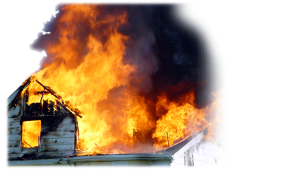

One of the first lines of defense is called a "Defensible Space." This space is a minimum area around the structure where combustible vegitation should be removed. Fire resistant vegitation should be planted and maintained throughout the year. The second line of defence is your "Control Line," which should be 6-10 feet of non-flammable patio.
